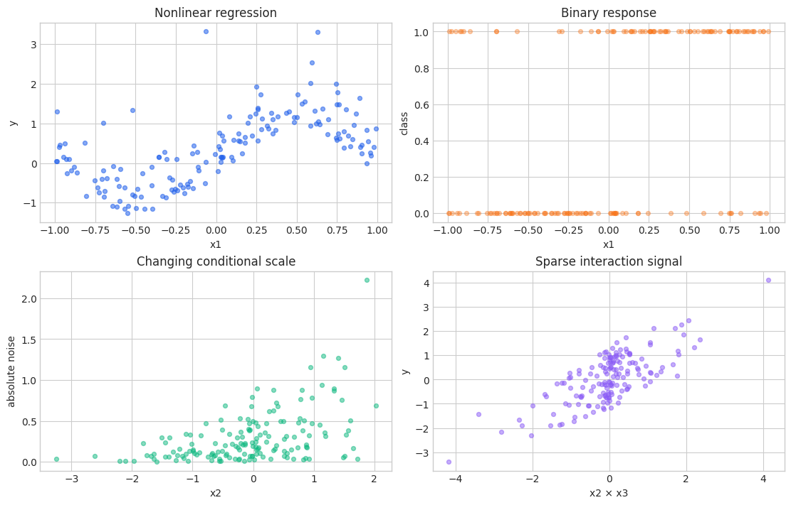

NAMpy core workflow
This notebook teaches NAMpy’s common modeling language once. Statistical GAMs and neural additive models use different fitting algorithms, but they share an estimator interface and an additive explanation contract. Later notebooks can therefore focus on model-specific theory rather than repeating fit, prediction, reconstruction, sklearn, and persistence.
Execution modes. The checked-in notebook uses FAST_MODE=True. Change it to False for larger samples and longer neural training.
1. Additive models as structured predictors
An additive model represents a linear predictor as
The main-effect functions \(f_j\) describe one feature at a time; interaction functions \(f_{jk}\) describe departures from those main effects. The offset \(o_i\) is known in advance and has coefficient one. Identifiability constraints center or otherwise anchor the functions so that the intercept and terms have stable meanings.
A link function connects the additive predictor to the conditional mean, \(g(\mu_i)=\eta_i\). Gaussian identity-link regression has \(\mu_i=\eta_i\). Binary logistic regression has \(\mu_i=\operatorname{logit}^{-1}(\eta_i)\). Additivity is therefore a statement about the link scale, not usually about the response scale.
Ordinary regression models one location or mean. Distributional regression assigns a separate additive predictor to each distribution parameter, for example \(\mu(x)\) and \(\sigma(z)\) in a normal location-scale model.
2. Synthetic datasets used throughout
[1]:
from pathlib import Path
import tempfile
import time
import warnings
import matplotlib.pyplot as plt
import numpy as np
import pandas as pd
warnings.filterwarnings("ignore", category=FutureWarning)
plt.style.use("seaborn-v0_8-whitegrid")
COLORS = ["#2563EB", "#F97316", "#10B981", "#8B5CF6", "#EF4444"]
FAST_MODE = True
N_SAMPLES = 160 if FAST_MODE else 5000
MAX_EPOCHS = 2 if FAST_MODE else 150
MAX_STEPS = 2 if FAST_MODE else -1
RANDOM_STATE = 7
CHECKPOINT_ROOT = Path(tempfile.mkdtemp(prefix="nampy-notebook-"))
NEURAL_FIT_KWARGS = {
"max_epochs": MAX_EPOCHS,
"max_steps": MAX_STEPS,
"batch_size": 64 if FAST_MODE else 256,
"random_state": RANDOM_STATE,
"checkpoint_path": CHECKPOINT_ROOT,
"logger": False,
"enable_progress_bar": False,
"enable_model_summary": False,
"num_sanity_val_steps": 0,
}
rng = np.random.default_rng(RANDOM_STATE)
n = N_SAMPLES
x1 = rng.uniform(-1.0, 1.0, n)
x2 = rng.normal(size=n)
group = pd.Categorical(rng.choice(["a", "b", "c"], size=n))
X = pd.DataFrame({"x1": x1, "x2": x2, "group": group})
main_signal = np.sin(np.pi * x1) + 0.35 * x2**2 + 0.30 * (group == "b")
y_reg = main_signal + rng.normal(0.0, 0.18, n)
logit = -0.3 + 1.8 * np.sin(np.pi * x1) - 0.7 * x2 + 0.5 * (group == "c")
p_binary = 1.0 / (1.0 + np.exp(-logit))
y_binary = rng.binomial(1, p_binary)
sigma = np.exp(-1.1 + 0.55 * (x2 - x2.mean()))
y_hetero = np.sin(np.pi * x1) + sigma * rng.normal(size=n)
X_sparse = pd.DataFrame({f"x{j}": rng.normal(size=n) for j in range(1, 7)})
y_sparse = (
np.sin(X_sparse["x1"])
+ 0.8 * X_sparse["x2"] * X_sparse["x3"]
+ rng.normal(0.0, 0.2, n)
)
datasets = {
"nonlinear regression": (X, y_reg),
"binary classification": (X, y_binary),
"heteroscedastic regression": (X[["x1", "x2"]], y_hetero),
"sparse interaction problem": (X_sparse, y_sparse),
}
pd.DataFrame(
{"dataset": name, "rows": len(features), "features": features.shape[1]}
for name, (features, target) in datasets.items()
)
[1]:
| dataset | rows | features | |
|---|---|---|---|
| 0 | nonlinear regression | 160 | 3 |
| 1 | binary classification | 160 | 3 |
| 2 | heteroscedastic regression | 160 | 2 |
| 3 | sparse interaction problem | 160 | 6 |
[2]:
fig, axes = plt.subplots(2, 2, figsize=(11, 7), constrained_layout=True)
axes[0, 0].scatter(X["x1"], y_reg, s=18, alpha=0.55, color=COLORS[0])
axes[0, 0].set(title="Nonlinear regression", xlabel="x1", ylabel="y")
axes[0, 1].scatter(X["x1"], y_binary, s=18, alpha=0.35, color=COLORS[1])
axes[0, 1].set(title="Binary response", xlabel="x1", ylabel="class")
axes[1, 0].scatter(X["x2"], np.abs(y_hetero - np.sin(np.pi * x1)), s=18, alpha=0.5, color=COLORS[2])
axes[1, 0].set(title="Changing conditional scale", xlabel="x2", ylabel="absolute noise")
axes[1, 1].scatter(X_sparse["x2"] * X_sparse["x3"], y_sparse, s=18, alpha=0.5, color=COLORS[3])
axes[1, 1].set(title="Sparse interaction signal", xlabel="x2 × x3", ylabel="y")
plt.show()
plt.close(fig)

3. First statistical and neural additive models
A GAM expands each smooth in a basis and controls roughness through a quadratic penalty. A NAM replaces each univariate smooth with a small neural network. Both return term-wise contributions, but their inductive biases differ: spline penalties favor smooth low-curvature functions; neural networks use architecture, optimization, dropout, and weight regularization.
[3]:
from sklearn.model_selection import train_test_split
from nampy.models import GAMRegressor, NAMRegressor
train_index, test_index = train_test_split(
np.arange(n), test_size=0.25, random_state=RANDOM_STATE
)
X_train, X_test = X.iloc[train_index], X.iloc[test_index]
y_train, y_test = y_reg[train_index], y_reg[test_index]
gam_train = X_train.assign(y=y_train)
gam = GAMRegressor(
formula="y ~ s(x1, bs='cr', k=9) + s(x2, bs='cr', k=9) + group",
smoothing_method="reml",
).fit(gam_train)
nam = NAMRegressor(
layer_sizes=[24, 12],
dropout=0.0,
numerical_preprocessing="minmax",
categorical_preprocessing="one-hot",
)
nam.fit(X_train, y_train, **NEURAL_FIT_KWARGS)
comparison = pd.DataFrame(
{
"model": ["GAMRegressor", "NAMRegressor"],
"test R2": [gam.score(X_test, y_test), nam.score(X_test, y_test)],
"prediction shape": [gam.predict(X_test).shape, nam.predict(X_test).shape],
}
)
comparison
/usr/local/lib/python3.10/dist-packages/tqdm/auto.py:21: TqdmWarning: IProgress not found. Please update jupyter and ipywidgets. See https://ipywidgets.readthedocs.io/en/stable/user_install.html
from .autonotebook import tqdm as notebook_tqdm
GPU available: False, used: False
TPU available: False, using: 0 TPU cores
/home/ad32/.local/lib/python3.10/site-packages/lightning/pytorch/trainer/connectors/data_connector.py:434: The 'train_dataloader' does not have many workers which may be a bottleneck. Consider increasing the value of the `num_workers` argument` to `num_workers=11` in the `DataLoader` to improve performance.
/home/ad32/.local/lib/python3.10/site-packages/lightning/pytorch/trainer/connectors/data_connector.py:434: The 'val_dataloader' does not have many workers which may be a bottleneck. Consider increasing the value of the `num_workers` argument` to `num_workers=11` in the `DataLoader` to improve performance.
/home/ad32/.local/lib/python3.10/site-packages/lightning/pytorch/core/module.py:522: You called `self.log('train_loss', ..., logger=True)` but have no logger configured. You can enable one by doing `Trainer(logger=ALogger(...))`
/home/ad32/.local/lib/python3.10/site-packages/lightning/pytorch/core/module.py:522: You called `self.log('val_loss', ..., logger=True)` but have no logger configured. You can enable one by doing `Trainer(logger=ALogger(...))`
`Trainer.fit` stopped: `max_steps=2` reached.
[3]:
| model | test R2 | prediction shape | |
|---|---|---|---|
| 0 | GAMRegressor | 0.966000 | (40,) |
| 1 | NAMRegressor | -0.420434 | (40,) |
6. Link scale and response scale
With an identity link, a one-unit term contribution is a one-unit change in the conditional mean. With a nonlinear inverse link, contributions add before transformation. For a logistic model,
Applying the logistic function to each term separately and adding the results is mathematically wrong. The response-scale effect of a term depends on the row’s other terms through the current value of \(\eta\).
[6]:
from nampy.models import GAMClassifier
binary_train = X.iloc[train_index].assign(y=y_binary[train_index])
classifier = GAMClassifier(
formula="y ~ s(x1, bs='cr', k=8) + s(x2, bs='cr', k=8) + group"
).fit(binary_train, binary_train["y"])
gaussian_components = gam.predict_components(X_test)
logistic_components = classifier.predict_components(X_test)
gaussian_components.validate_additive_reconstruction()
logistic_components.validate_additive_reconstruction()
display(pd.DataFrame({
"scale": ["Gaussian link", "Gaussian response", "logistic link", "class-1 probability"],
"first prediction": [
gaussian_components.link[0], gaussian_components.response[0],
logistic_components.link[0], logistic_components.response[0],
],
}))
| scale | first prediction | |
|---|---|---|
| 0 | Gaussian link | 0.724327 |
| 1 | Gaussian response | 0.724327 |
| 2 | logistic link | 0.292609 |
| 3 | class-1 probability | 0.572635 |
7. Scikit-learn integration
Because preprocessing is already part of neural estimators, they can be placed directly in a pipeline. GAM array adapters also compose with external transformers. Cross-validation estimates generalization; GridSearchCV clones the estimator for every candidate, so all modeling choices must be constructor parameters. Custom scorers should respect the task’s response scale.
[7]:
from sklearn.base import clone
from sklearn.model_selection import GridSearchCV, KFold, cross_val_score
from sklearn.pipeline import Pipeline
numeric_X = X[["x1", "x2"]]
pipeline = Pipeline([
("model", GAMRegressor(optimize_smoothing=False, smoothing_method="fixed", smoothing_params=[0.7, 0.7])),
])
cv = KFold(n_splits=3, shuffle=True, random_state=RANDOM_STATE)
cv_scores = cross_val_score(pipeline, numeric_X, y_reg, cv=cv, scoring="r2")
search = GridSearchCV(
pipeline,
{"model__k": [6, 9]},
cv=cv,
scoring="neg_mean_squared_error",
).fit(numeric_X, y_reg)
display({
"mean CV R2": float(cv_scores.mean()),
"best parameters": search.best_params_,
"clone class": type(clone(nam)).__name__,
})
{'mean CV R2': 0.7857520100317851,
'best parameters': {'model__k': 9},
'clone class': 'NAMRegressor'}
8. Persistence and reproducibility
save_model stores the fitted estimator, preprocessing state, schema, and model parameters. Load with the same estimator class and verify prediction equality. A random seed controls initialization and data order, but exact cross-device floating-point reproducibility can still be limited by hardware and backend kernels.
[8]:
gam_path = gam.save_model(CHECKPOINT_ROOT / "core-gam.nampy")
nam_path = nam.save_model(CHECKPOINT_ROOT / "core-nam.nampy")
restored_gam = GAMRegressor.load_model(gam_path)
restored_nam = NAMRegressor.load_model(nam_path)
np.testing.assert_allclose(restored_gam.predict(X_test), gam.predict(X_test))
np.testing.assert_allclose(restored_nam.predict(X_test), nam.predict(X_test))
pd.DataFrame({
"model": ["GAM", "NAM"],
"path suffix": [gam_path.suffix, nam_path.suffix],
"prediction equality": [True, True],
})
[8]:
| model | path suffix | prediction equality | |
|---|---|---|---|
| 0 | GAM | .nampy | True |
| 1 | NAM | .nampy | True |
9. What the next notebooks add
The GAM guide develops bases, penalties, families, shape constraints, inference, diagnostics, and GAMLSS. The neural model zoo explains the architectural inductive biases. The task and distributional guide then executes the task variants discovered from the installed registry and separates ensemble disagreement, GAM standard errors, and conditional distributional uncertainty.